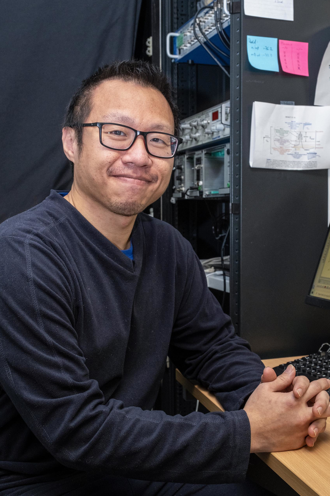
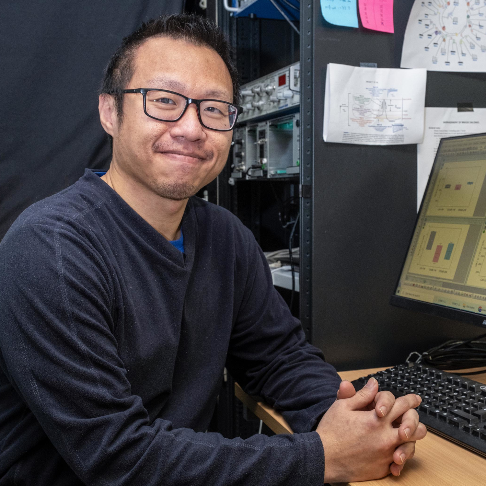

Hi, my name is Piece Yen and I study age‑related hearing loss through a systems‑level neuroscience lens.

I work at the intersection of aging, hearing, and systems neuroscience. My research focuses on how age‑related changes in the auditory system—particularly within the cochlea—shape auditory perception and communication. I aim to identify early markers and intervention windows for age‑related hearing loss, and connect peripheral neural mechanisms with real‑world listening challenges through a systems‑level understanding of auditory function.
Learn more about my research